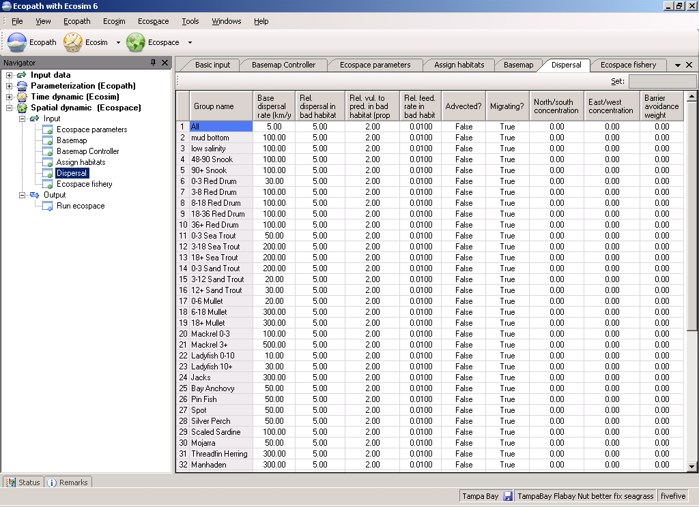
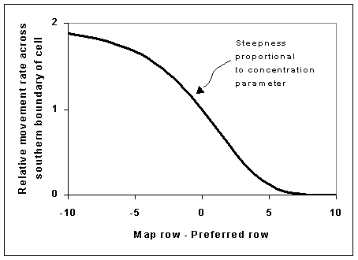

4.2 Representing seasonal migration in Ecospace
Larger organisms commonly have seasonal migration patterns that allow them to utilize favorable seasonal resource and environmental conditions over large spatial areas. Such movements can be represented in Ecospace in two ways. First is a simple “Lagrangian” approach that does not require explicit simulation of movement; the idea here is to simply think of the whole Ecospace map as moving in space so as to remain centered on the distribution of some dominant migratory specie(s). Second is a more complex “Eulerian” approach, which does involve explicitly modeling changes in instantaneous rates of biomass flow among the Ecospace spatial cells, in some way that approximates at least the changing center of distribution of the migratory species.
The Eulerian approach is implemented in Ecospace by allowing users to define a monthly sequence of “preferred” map cell positions (using the “Define migrations” button on the Ecospace Dispersal form, see See "Figure 10.8. Ecospace dispersal rates and habitat specific information. Migration patterns are also defined on this form."), and to define how spread out the migrating fish are likely to be around these preferred cells by setting north-south and east-west “concentration parameters” on the Ecospace Dispersal form. The Define migrations button causes a map of the Ecospace region to be displayed, with migratory species and months of the year listed, see See "Figure 10.8. Ecospace dispersal rates and habitat specific information. Migration patterns are also defined on this form.". Preferred position for each month (and the annual trajectory of preferred positions) is set by simply clicking on this map; each such mouse click also triggers the interface to increment the entry month by 1, making it very simple to “sketch” the annual migration trajectory.
Unfortunately, there is no way to make the Ecospace migration simulations very simple to set up. Generally the user must do considerable numerical experimentation to find reasonable migration parameter values and a stable numerical solution scheme; these cannot be computed in advance since they depend on a variety of details about the spatial map grid and species movement characteristics. Here are a few key points to keep in mind while experimenting (by repeated simulations) with the migration interface:
- If the monthly preferred cell positions are far apart (>2 or 3 cells apart), the user will need to set the Ecospace simulation time step short enough (on order of (1/12)/(mean number of cells between preffered locations), e.g., 0.08333/3=0.028 year when preferred cells are 3 rows-columns apart between months) to allow enough numerical integration time steps for animals to move between the preferred cells.
- The concentration parameters are relative values that the user needs to set by trying alternatives (generally in the range 0.5 to 4.0) to see what values give general distribution patterns similar to those observed in the field. Low values (<1.0) lead to weak distortion of movement toward preferred cells and hence to more widely spread distributions, while high values (e.g. 3.0) give distributions strongly concentrated near the preferred cells.
- Mean annual movement distances (Ecospace Dispersal form) have to be set large enough for migrating species to be able to “track” movements in preferred locations. As a general rule, set the base dispersal rate for migratory species to at least 100L km/yr., where L is mean body length in cm.
- Setting high concentration parameter values (>2.0) and/or moving animals through a very complex map with many coastal blocking features can result in numerical instability in the Ecospace solution algorithm. The best way to correct this is to reduce the simulation time step; it may also be necessary to reduce the SOR w relaxation weight (Ecospace parameters form) used in solving the linear equations involved in the numerical scheme for integrating the spatial rate equations (an alternating implicit method).
- Setting high concentration parameter values can also result in “overfishing”: Ecospace allocates total fishing effort over the map proportional to the total number of cells initially used by each fishing fleet, so when the model generates a concentrated distribution of some favored species, the total effort will concentrate accordingly and can sometimes generate very high fishing rates near the center of the migrating stock distribution. Remedies include reducing total effort (Ecospace fishery form, total effort multiplier) and distributing effort more widely (Ecospace fishery form, reduce value of “effective power”).
- Concentrating a migratory predator can cause local depletion of food organisms and/or reduced per-predator feeding rates due to prey vulnerability limits. If these effects cause simulated total predator biomass to incorrectly decline over time (and if the user determines that the declines are not due to an artifactual overfishing effect), then it may be necessary to either increase total prey abundances (in Ecopath) or vulnerability of prey to the predator (Ecosim Vulnerabilities form).
- Split group and multi-stanza population dynamics may behave strangely or incorrectly when one or more life history stages are migratory while other(s) are not. Ecospace does not keep track of the full population age/size distribution for each spatial cell (prohibitive memory and computing time requirement), and instead uses a running equilibrium approximation to the population composition. This approximation tends to “dampen” abundance fluctuations in the early life history stanzas that might be created by, for example, seasonal movement of the adults to spawning locations near preferred juvenile habitats.
The mathematical method used in Ecospace to create migratory behavior is quite simple. Spatial movement is represented in general in Ecospace as a set of instantaneous exchange rates across the boundaries of adjacent spatial cells. For migratory species, these exchange rates are simply multiplied by relative factors at each simulation time step, where the factors depend on distance from the preferred cell for that time step as shown in Figure 68.
(The function is reversed for movement across northern cell boundary, and similar function is used for east-west movements with map column-preferred column as the independent variable). The factor has no effect (multiplies movement rates by 1.0, so movement rates are similar in all directions) for cells near the preferred cell, and ‘shuts down’ movement away from the preferred cell for cells far from that preferred cell. Note that the base movement rates that are multiplied by the migration factors may not be the same in all directions to start with; these base rates can include advection effects and/or increased/oriented movement rates towards preferred habitat types. That is, migration effects can be combined with advection and orientation of movement toward preferred habitats; it was the desire to represent such combined effects that motivated the multiplicative factor formulation in the first place.

Figure 4.1. Ecospace dispersal rates and habitat specific information. Migration patterns are also defined on this tab.
GRAPHIC HERE
Figure 4.2. Seasonal migration in Ecospace. Indicate center of gravity for each month for each migrating group.

Figure 4.3. Relative movement rates; see text for details.